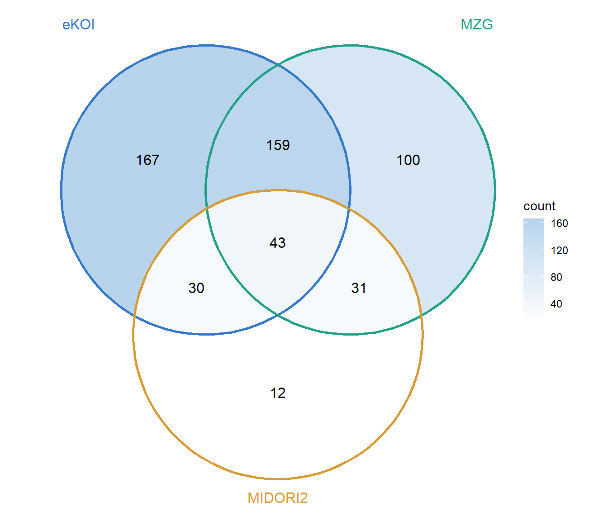

Oxford Nanopore Technologies (ONT) metabarcoding data were processed for multiple marine eDNA markers, including 16S, 18S V4, ITS, COI and MiFish 12S. The workflow was developed iteratively using representative samples before being applied across the full dataset.
The general processing strategy consisted of:
Identifying and removing PCR primers using Cutadapt and retaining only reads containing the expected linked forward and reverse primer combination. Applying marker-specific length filters.
Applying read-quality filtering using Chopper.
OTU consensus generation using Amplicon_sorter.
Assigning taxonomy using DADA2 assignTaxonomy()
For each marker, Cutadapt was supplied with the expected primer pair in both orientations using linked adapters:
Below is the table summarising the cutadapt settings:
Marker
Primers
Linked-primer Cutadapt pattern
Error rate
Min overlap
Length filtering in Cutadapt
Notes / current choice
16S V4
515F_mod / 806R_mod
GTGYCAGCMGCCGCGGTAA...ATTAGAWACCCBNGTAGTCC and reverse orientation
0.10
15
none initially; later post-trim filtering around 230–300 bp
Very clean marker; high retention.
18S V4
TAReuk454FWD1/TAReukREV3 CCAGCASCYGCGGTAATTCC / R ACTTTCGTTCTTGATYRA
CCAGCASCYGCGGTAATTCC...TYRATCAAGAACGAAAGT and ACTTTCGTTCTTGATYRA...GGAATTACCGCRGSTGCTGG
0.25
15
none during first trimming; planning broad post-trim window around 330–450 bp
Current production setting. Dominant trimmed product ~380 bp.
COI
mlCOIintF / jgHCO2198
GGWACWGGWTGAACWGTWTAYCCYCC...TGRTTYTTYGGNCAYCCNGARGTNTA and reverse orientation
0.25
15
tested broad 280–360 bp post-trim window
Current preferred setting. Dominant trimmed product ~313 bp.
MiFish 12S
MiFish-U-F / R
GTCGGTAAAACTCGTGCCAGC...CAAACTGGGATTAGATACCCCACTATG and reverse orientation
0.20
15
none initially
We tested primer recovery; this marker had the unusual dual-length behaviour in the Illumina dataset, but for ONT we were still at primer-trimming/QC stage.
ITS
ITS3 / ITS4
GCATCGATGAAGAACGCAGC...GCATATCAATAAGCGGAGGA and reverse orientation
0.20
15
broad downstream window around 200–800 bp
Kept broad because genuine ITS length variation is large.
Consensus sequences generated independently for each sample using amplicon_sorter were combined into a single FASTA file. Sequences were dereplicated using VSEARCH (--derep_fulllength --strand both) to retain unique sequences at 100% identity, accounting for reverse complements. This reduced 6,791 consensus sequences to 2,118 unique sequence variants (OTUs).
Original primer-trimmed and quality-filtered Nanopore reads were mapped against these OTUs using Minimap2 (map-ont). Primary alignments were extracted, excluding secondary, supplementary and unmapped alignments. Reads were retained if they met the following criteria:
Alignment identity ≥95%
Query coverage ≥95%
No minimum mapping quality (MAPQ) threshold
Read counts per OTU were aggregated across all 33 samples and two controls to generate the OTU abundance table.
Results: A total of 4,340,358 reads were assigned to 2,118 OTUs across 35 samples and controls. Of these, 1,703 OTUs received at least one read, while 415 had zero assigned reads. The latter may reflect ambiguous mapping between closely related sequence variants or alignment filtering and require further investigation.
Outputs:otu_table.tsv, otu_representatives_final.fasta and mapping_qc.tsv.
NoteZero-abundance OTUs
Of the 2,118 unique consensus variants, 1,703 recruited at least one read after filtering, while 415 (19.6%) had zero assigned reads. Among the latter, 333 (80.2%) received primary alignments that failed the ≥95% identity and/or coverage criteria, 81 (19.5%) received only secondary alignments, and one (0.2%) received no alignments.
These results indicate that zero-abundance variants primarily resulted from alignment filtering and competition among closely related consensus sequences rather than complete failure of read recruitment.
Importantly, each retained sequencing read was counted only once, using its primary Minimap2 alignment. Overall, 4,340,358 reads (97.3% of input reads) were assigned to OTUs. Although closely related variants may compete for read assignments, this uncertainty may be reduced by aggregating abundances at higher taxonomic ranks following taxonomic classification.
The OTU count table (otu_table.tsv) and representative sequences (otu_representatives_final.fasta) were imported into R and saved as otu.rds. Taxonomy was assigned using DADA2 assignTaxonomy() and addSpecies() against SILVA v138.2, generating taxa.rds and taxa_bootstrap.rds.
Taxonomic assignment was successful for 99.8% of reads at phylum level, 84.8% at family level, 70.7% at genus level and 3.1% at species level. The OTU table, taxonomy and representative sequences were then combined into a phyloseq object for downstream analyses.
Now let’s repeat that for 18S!
18S OTU table and taxonomic assignment workflow
Step
Tool
Output
1. Combine consensus sequences
Bash
all_consensus.fasta
2. Dereplicate at 100% identity
VSEARCH
otu_representatives_final.fasta
3. Build reference index
Minimap2
otu_reference.mmi
4. Map original reads
map_all_samples.sh
Sorted BAM files
5. Generate OTU read counts
build_otu_table.py
otu_table.tsv, mapping_qc.tsv
6. Assign taxonomy
DADA2 + PR2
taxa.rds, taxa_bootstrap.rds
Comparison of OTU recovery across molecular markers
Metric
16S
18S
COI
Original consensus sequences
6,791
6,332
10,528
Unique variants (100% identity)
2,118
1,918
3,079
OTUs with assigned reads
1,703
1,679
2,716
Zero-abundance OTUs
415 (19.6%)
239 (12.5%)
363 (11.8%)
Total assigned reads
4,340,358
5,425,992
8,807,835
Samples and controls
35
35
35
Discussion
COI recovered the highest number of unique sequence variants (3,079), followed by 16S (2,118) and 18S (1,918). COI also produced the greatest number of assigned reads (8.81 million), reflecting differences in sequencing depth and potentially amplification efficiency among markers.
Following read mapping and filtering (≥95% identity and coverage), 11.8–19.6% of unique consensus variants received no reads. This proportion was highest for 16S (19.6%) and lowest for COI (11.8%). Zero-abundance OTUs likely result from alignment filtering and competition among closely related consensus variants, as demonstrated for 16S.
Overall, the workflow successfully generated read-abundance tables for all three markers while preserving single-nucleotide differences between consensus sequences. However, differences in OTU richness should not be interpreted directly as differences in biological diversity without accounting for marker-specific resolution, amplification biases and sequencing depth.
COI taxonomic assignment
Taxonomic assignment of the 3,079 COI OTUs was performed using DADA2 assignTaxonomy() against three reference databases: eKOI, MZG and MIDORI2.
Classification success
Database
Classified OTUs
OTUs (%)
Reads (%)
eKOI
399
13.0
22.0
MZG
333
10.8
16.8
MIDORI2
116
3.8
4.7
Combined
542
17.6
—
eKOI provided the highest genus-level classification coverage. MZG contributed 131 additional OTUs not classified by eKOI, while MIDORI2 contributed only 12 OTUs not classified by either database. Combining all three databases increased the number of genus-classified OTUs to 542 (17.6%), leaving 2,537 OTUs (82.4%) unclassified.
Classification overlap

Figure 1: Overlap of genus-level COI taxonomic assignments across eKOI, MZG and MIDORI2.
The three databases showed partial complementarity, but their assignments were not always consistent.
Agreement between databases
Comparison
Shared OTUs
Matching genera
Agreement (%)
eKOI vs MZG
202
123
60.9
eKOI vs MIDORI2
73
12
16.4
MZG vs MIDORI2
74
22
29.7
Agreement was highest between eKOI and MZG (60.9%). MIDORI2 showed substantially lower agreement, including implausible metazoan assignments for sequences classified as marine protists by the other databases.
Vertebrate assignments
Three OTUs (215 reads; 0.0024% of all COI reads) were classified as vertebrates. eKOI identified two closely related OTUs as Homo sapiens (200 reads) and one as Ovis aries (15 reads). These identifications were supported by independent BLASTn searches, including a 100% identity match across the full amplicon for O. aries. In contrast, MZG assigned these sequences to fish taxa, with low genus-level bootstrap support.
These mammalian sequences may represent low-level contamination, although their occurrence across samples and negative controls should be examined before drawing conclusions.
Conclusion
eKOI and MZG provided the most useful and complementary COI classifications, increasing genus-level coverage from 399 to 530 OTUs when combined. MIDORI2 contributed limited additional coverage and showed substantial taxonomic disagreement. Overall, the low genus-level classification success highlights limitations in available COI reference databases and the importance of independent validation of uncertain taxonomic assignments.
A useful comparison with the Illumina dataset
Since I used the same SILVA reference and DADA2 taxonomy functions for my Illumina 16S data, I could compare the two sequencing technologies using: - Percentage of OTUs/ASVs classified at each rank. - Percentage of sequencing reads classified at each rank. - Genus-level bootstrap confidence distributions.